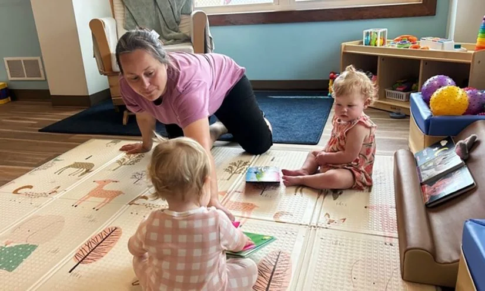

01
北京：十五年制特殊教育学校覆盖各区
当‘有学上’不再是问题，‘上好学’才是真正的考验。
北京宣布，十五年制特殊教育学校已覆盖所有区。这意味着，从学前到高中，特殊儿童在任何一个区都能找到完整的教育链条。这是一个重要的里程碑，它把特殊教育从‘边缘’拉到了‘标配’的位置。
但覆盖不等于质量。十五年制学校解决了‘有没有’的问题，但‘好不好’取决于师资、课程和个别化支持。特殊儿童的需求高度个体化，一个自闭症孩子和一个听障孩子需要的支持完全不同。如果学校只是把不同障碍类型的孩子放在同一个教室里，用同一套教材，那‘全覆盖’就可能变成‘全统一’。
对家长来说，这当然是个好消息，但也要保持清醒。你需要去了解学校的个别化教育计划是否真的落地，老师是否接受过专业训练，学校是否有资源教室和辅助技术人员。如果只是把特殊孩子‘塞进’普通班级，那可能适得其反。
行动上，你可以做三件事：第一，实地考察学校，观察课堂里特殊孩子的参与度；第二，与老师沟通，确认他们是否了解你孩子的具体需求；第三，加入家长社群，分享信息，互相支持。教育公平不是把每个孩子放在同一个起点，而是给每个孩子不同的支持，让他们都能走得更远。
伊恩的观察
资源覆盖是公平的第一步，但真正的公平是让每个孩子都能获得适合他的支持。
02
高校暑期培训：研究生教育与新教职工的‘充电’时刻
培训不是‘走过场’，而是教育质量的‘隐形基础设施’。
中国科学技术大学举办了2026年研究生教育暑期培训研修班，西北工业大学则开展了新进教职工入职培训。这类培训在高校中很常见，但容易被忽视。它们其实是教育质量的重要保障。
研究生教育的质量，很大程度上取决于导师的指导能力。研修班可能涉及科研方法、学术伦理、学生心理等主题，这些都能帮助导师更好地指导学生。新教职工培训则关乎教师的职业起步，从教学技巧到学生管理，从学校文化到职业规划，这些都能影响一位新老师的职业轨迹。
但培训的效果，往往取决于是否持续。一次暑期班能点燃火花，但如果没有后续的教研支持、同行交流和反馈机制，火花很快就会熄灭。对高校来说，培训不应是一次性的活动，而应是一个持续的系统。
对研究生和青年教师来说，你可以主动利用这些培训资源。不要只把它当作‘任务’，而是去发现对自己有用的部分。比如，如果你在科研中遇到瓶颈，可以去找培训中的专家聊聊；如果你是新手教师，可以请教有经验的同事。培训的价值，不在于你听了多少，而在于你用了多少。
伊恩的观察
培训是教育系统的‘隐形基础设施’，它的价值取决于持续性和你的主动参与。
03
广西：‘双语翻译+家庭教育指导师’调解涉外家事纠纷
当语言不通时，家庭教育指导如何跨越文化的鸿沟？
广西推出了一种新的调解模式：在涉外家事纠纷中，引入双语翻译和家庭教育指导师。这听起来像是一个专业细节，但它背后是一个日益全球化的现实：跨国家庭越来越多，当夫妻来自不同文化背景时，育儿观念的冲突可能成为矛盾的焦点。
双语翻译解决的是‘听得懂’的问题，但家庭教育指导师解决的是‘说得通’的问题。指导师不仅要懂教育，还要理解不同文化中的育儿理念。比如，西方家庭可能更强调孩子的独立性，而东方家庭可能更注重学业成绩。如果调解员只站在一方文化立场上，调解就可能变成‘说服’而不是‘沟通’。
这种模式对普通家庭的启示是：家庭教育不是孤立的，它深受文化、语言和社会环境的影响。当家庭内部出现育儿分歧时，不要急于评判对错，而是先理解彼此的成长背景和价值观。
对家长来说，你可以做的是：第一，学习一些基本的儿童发展知识，这样在分歧时能有共同的语言；第二，如果遇到跨文化冲突，可以寻求专业的家庭教育指导，而不是自己硬扛；第三，尊重孩子的双重文化身份，帮助他们建立自己的文化认同。
伊恩的观察
家庭教育指导需要文化敏感性，理解差异比说服对方更重要。
04
美国两党议员呼吁改革‘脆弱’的儿童保育系统
当保育成本让家庭不堪重负，谁来为‘未来的劳动力’买单？

在美国，一个由13名共和党和民主党议员组成的两党小组，在年度峰会上呼吁全面改革儿童保育系统。他们指出，现行系统‘对家庭收费过高，对提供者支付过低’，导致许多地区供需严重失衡。
这个问题看似是美国特有，但背后的逻辑是全球性的：早期保育不仅是家庭问题，更是经济问题。当父母无法负担保育费用，他们可能选择一方离职，这影响家庭收入；或者选择低质量的保育，这影响孩子的发展。而保育工作者薪资低，导致人才流失，进一步加剧供需矛盾。
对普通家庭来说，保育质量直接影响孩子的早期发展。研究表明，高质量的早期教育能带来长期的认知和社会性收益。但‘高质量’往往意味着高成本，这让许多家庭陷入两难。
在中国，托育服务也在快速发展，但同样面临成本和质量的问题。作为家长，你可以做的是：第一，关注托育机构的资质和师资，不要只看价格；第二，利用社区资源，比如亲子活动、家长互助小组，降低育儿成本；第三，支持政策倡导，让决策者听到家庭的声音。
伊恩的观察
儿童保育是公共问题，它的质量影响的不只是家庭，更是整个社会的未来。
05
西弗吉尼亚州：三年级阅读数学不达标须留级
留级制度是‘兜底’还是‘惩罚’？它如何影响孩子的自信？
美国西弗吉尼亚州的一项法律今年生效：三年级学生在阅读和数学上不达标，必须留级。这项名为《三年级成功法案》的法律，是2023年教育立法的一部分，旨在通过早期干预提高学业水平。
支持者认为，三年级是孩子从‘学习阅读’转向‘通过阅读学习’的关键期，如果在这个阶段落后，后续学习会越来越吃力。留级可以给孩子额外的时间来巩固基础。反对者则担心，留级可能伤害孩子的自尊心，增加辍学风险，而且效果并不一定好。
实际上，留级的效果取决于配套支持。如果只是让孩子重复一年同样的内容，而没有针对性的干预，那留级可能只是‘重复失败’。但如果留级的同时提供个性化辅导、小班教学和心理支持，那留级可能成为转机。
对家长来说，如果你孩子面临类似情况，不要恐慌。首先，与老师沟通，了解孩子的具体困难在哪里；其次，制定一个家庭支持计划，比如每天阅读20分钟，用游戏方式练习数学；最后，关注孩子的情绪，留级不等于失败，它可以是重新出发的机会。
伊恩的观察
留级不是目的，而是手段。真正的关键在于留级期间能否提供有效的支持。
无障碍文字记录
伊恩 你好，欢迎收听伊恩每日·教育。今天我们要聊几个和教育相关的新闻，有国内的，也有国外的。比如北京实现了十五年制特殊教育学校全覆盖，美国一些州在讨论幼托改革，还有西弗吉尼亚州三年级留级的新规。这些看似分散的消息，其实都指向同一个问题：教育系统如何真正照顾到每一个孩子和家庭。我们先从北京的特殊教育开始。
伊恩 今天先说一个好消息。根据新浪财经和京报网的报道，北京已经实现了各区十五年制特殊教育学校的全覆盖。这意味着从学前到高中，每个区都有专门为特殊需要孩子设立的学校。十五年制，覆盖了学前、义务教育到高中阶段。这对那些有特殊需求的孩子和他们的家庭来说，意味着就近入学成为可能，不用再跨区奔波。当然，全覆盖不等于质量完全均衡，但至少提供了一个基础保障。如果你身边有特殊孩子的家长，可以告诉他们这个信息，让他们知道有这样的选择。
听众 伊恩，我有个亲戚的孩子有自闭症，现在在普通学校随班就读，但老师反映跟不上。北京这个政策对他们有帮助吗？
伊恩 这是个很实际的问题。随班就读是融合教育的一种形式，但并不是所有孩子都适合。北京的全覆盖意味着你的亲戚有了更多选择：可以继续在普通学校，也可以申请转入特殊教育学校。关键在于评估孩子的实际需求。建议你亲戚先和学校沟通，了解孩子的具体情况，再咨询当地特殊教育资源中心，看看哪种安置方式更适合。记住，没有绝对的好坏，只有适合不适合。
伊恩 这两天，中国科学技术大学举办了2026年研究生教育暑期培训研修班，西北工业大学也启动了新进教职工入职培训。这类消息通常不会上热搜，但如果你正打算读研，或者已经在读，它其实和你有关。
先说事实。中科大的研修班，按校方发布的信息，是面向研究生导师和培养管理人员的暑期培训，内容一般涉及教学方法、学术规范、心理健康指导这些方面。西工大的入职培训，则是给新入职教师准备的，帮他们熟悉学校制度、教学要求和科研环境。两件事都发生在暑假，属于高校内部常规的师资建设动作。
为什么高校要花一个暑假做这些？因为研究生培养的质量，很大程度上取决于导师怎么带学生。一个导师如果只会自己发论文，不懂怎么和学生沟通、怎么处理学术压力，学生就容易走弯路。研修班就是想把导师的指导能力往上提一提。同样，新教师入职培训，是为了让刚进高校的人尽快进入角色，少踩坑。
这件事对你的影响，可能比想象中直接。如果你即将成为研究生，你的导师可能刚参加过这类培训，这意味着学校在提醒导师：带学生不是放养，要讲方法。但你要知道，培训只是起点，导师的实际指导风格不会因为一次研修就彻底改变。所以，别把期待全押在制度上，自己主动一点更重要。
具体怎么做？如果你已经确定了导师，开学前可以主动联系，问问他对研究生的期望、实验室的节奏，甚至直接要一份推荐书单。如果你还没入学，可以关注学校研究生院的官网，看看有没有类似的公开讲座或资源。在读研究生也一样，学校组织的学术规范、心理辅导活动，别嫌麻烦，去参加一次，往往比你自己摸索省力。
这里有个常见的误区：很多人觉得这些培训是给老师“走过场”，和自己没关系。但换个角度看，学校愿意花时间培训导师，说明培养质量这件事被认真对待了。当然，效果需要时间检验，不可能今天培训明天就变样。作为学生，你能做的，是把自己当成培养体系里主动的一方，而不是被动等安排。
长期来看，这类培训如果持续做下去，研究生和导师之间的沟通会更顺畅，学术生态也会更健康。但制度只是土壤，种子还得自己长。所以，别只盯着学校做了什么，更要问自己：我有没有为自己的研究生阶段做好准备？这才是你能掌控的部分。
伊恩 今天想跟你聊一个把法律和家庭教育结合起来的新闻。广西推出了一种新的调解模式，叫“双语翻译+家庭教育指导师”，专门用来化解涉外家事纠纷。什么意思呢？就是当夫妻双方来自不同国家或文化背景，发生家庭矛盾时，调解员不仅提供语言翻译，还有家庭教育指导师参与，帮助双方理解彼此的文化和教育观念。这体现了教育在家庭冲突中的柔性作用。对于跨国婚姻家庭来说，这种模式能减少因文化差异导致的误解。如果你身边有这样的家庭，可以建议他们了解当地是否有类似服务。
听众 伊恩，我朋友是涉外婚姻，最近因为孩子教育问题闹矛盾，这种调解模式真的有用吗？
伊恩 调解模式的价值在于提供一个中立、专业的沟通平台。双语翻译解决了语言障碍，家庭教育指导师则能帮助双方理解不同文化下的教育理念。但它的效果取决于双方的意愿。如果双方都愿意坐下来谈，那调解能起到很大作用；如果一方抗拒，效果就有限。建议你朋友先尝试接触调解机构，了解流程，再决定是否采用。记住，任何调解都需要双方有诚意。
伊恩 今天我们把目光转向美国，聊一个看似遥远、却可能触动你的话题：幼托系统。根据The 74和Stateline的报道，一群美国两党州议员在芝加哥的全国州议会会议上，呼吁彻底改革幼托系统。他们说，现在的系统让家庭负担过重，提供者收入过低，导致供需严重失衡。13位共和党和民主党议员，花了一年时间研究幼托的可及性和 affordability 问题，提出了一系列政策建议。
先看事实：这个两党小组由13位州议员组成，他们在过去一年研究了幼托的获取和负担能力问题，并在本周芝加哥的全国州议会会议上提出了政策建议。他们强调，幼托对家庭来说太贵，对提供者来说报酬太低，这导致许多地区需求远超供给，出现巨大的获取差距。
为什么会出现这样的局面？机制并不复杂。幼托是一个劳动密集型行业，成本主要花在人力上。要保证质量，师生比必须低，这意味着每个老师照顾的孩子不能太多，成本自然高。如果收费太高，家庭负担不起；如果压低收费，老师工资就低，留不住人，供给就减少。这是一个两难困境，美国很多地区就卡在这里。
代价是什么？最直接的是孩子。幼托质量直接影响儿童早期发展，包括语言、认知和社交能力。如果孩子得不到高质量的照护，可能影响入学准备，甚至长期的学习表现。对家长来说，幼托费用可能占家庭收入的很大一部分，尤其对低收入家庭，可能被迫减少工作或放弃工作，进一步加剧经济压力。对提供者来说，低工资导致高流动率，反过来又影响服务质量。
对普通人有什么影响？如果你在美国，可能正在为幼托费用发愁，或者担心找不到合适的托位。如果你在中国，虽然情况不同，但幼托问题同样存在。中国的公立幼儿园资源有限，私立机构质量参差不齐，收费也不低。许多家庭面临类似的困境：既想给孩子好的早期教育，又担心经济负担。
这里有一个误区：很多家长认为，幼托就是找个地方看孩子，只要安全就行。但研究显示，早期教育质量对孩子的长期发展有显著影响。高质量的幼托能提供丰富的语言环境、互动机会和结构化活动，这些都有助于大脑发育。所以，选择幼托时，不能只看价格和距离，还要看师资、课程和师生比。
但也不必过度焦虑。幼托只是孩子成长的一部分，家庭环境才是最重要的。即使幼托条件一般，只要家长用心陪伴、积极互动，孩子依然能健康发展。教育公平是一个长期课题，但个体家庭可以通过自己的努力，弥补一些外部条件的不足。
对于政策制定者，这个案例提醒我们，幼托问题不是单一因素造成的，需要系统性解决方案，比如政府补贴、提高教师待遇、增加供给等。对于家长，选择幼托时，可以多考察几家，关注师生比、教师资质和课程设计，同时也要平衡经济压力。
最后，我想说，无论中美，幼托问题都折射出社会对早期教育的重视程度。它不只是家庭的事，也是公共政策的事。希望每个孩子都能在安全、有爱的环境中成长，而这需要家庭、社会和政府共同努力。
伊恩 今天想和你聊一条来自美国西弗吉尼亚州的教育新闻。从今年秋季学期开始，根据2023年通过的《三年级成功法案》，三年级学生在阅读和数学测试中如果不达标，将被要求留级。这项法律还规定，在幼儿园到二年级的班级中配备助教，以加强早期干预。当然，法律也为有特殊需求的学生设定了一些例外情况。
这项政策的初衷，是确保孩子在关键的基础技能上不掉队。支持者认为，三年级是孩子从“学习阅读”转向“通过阅读学习”的转折点，如果在这个阶段没有打好基础，后续的学习会越来越吃力。留级虽然听起来严厉，但可能是给孩子一个重新巩固的机会。
然而，批评者的担忧也很现实。留级可能对孩子的自尊心造成伤害，让他们在同龄人中感到羞耻，甚至增加未来辍学的风险。而且，留级并不等于有效的教学支持，如果只是重复同样的内容，孩子可能依然无法进步。
对于家长来说，这条新闻其实是一个提醒。三年级确实是一个重要的观察窗口。如果你发现孩子在阅读或数学上出现困难，比如识字量明显落后、计算速度慢、或者对学习产生抵触情绪，不要等到成绩单亮红灯才行动。尽早干预，比如每天陪读15分钟、和老师沟通制定个别化计划，往往比事后补救更有效。
但也要记住，留级不是唯一的选择。每个孩子的发展节奏不同，个性化支持——比如课后辅导、学习策略训练、甚至心理疏导——可能比简单重复一年更有价值。政策的初衷是帮助孩子，而不是惩罚他们。作为家长，我们需要做的，是理解政策背后的逻辑，同时关注孩子的真实需求，和他们一起找到最适合的成长路径。
听众 伊恩，我孩子今年三年级，数学有点跟不上，我该怎么做才能避免留级？
伊恩 首先，别慌。留级只是最后的手段，而且在中国并非普遍做法。你需要做的是：第一，和老师沟通，了解孩子具体在哪些知识点上有困难；第二，制定一个家庭辅导计划，每天花20分钟针对薄弱点练习；第三，关注孩子的学习习惯，比如是否专注、是否及时完成作业。如果问题持续，可以寻求专业的学习支持。记住，孩子的成长不是匀速的，有些阶段需要更多耐心。
伊恩 今天我们聊了五条新闻，它们看似分散，但有一个共同主题：教育系统如何更公平、更有效地支持每一个孩子。北京的特殊教育全覆盖，是保障特殊需要孩子的受教育权利；研究生培训是提升高等教育质量；涉外调解是让教育服务更贴近家庭需求；美国幼托改革和留级新规则是不同国家面对类似问题的不同答案。这些政策背后，都是对教育公平的追求。但政策只是框架，真正落地还需要家庭、学校和社会的共同努力。
伊恩 所以，无论你是家长、学生还是教育工作者，都可以从今天的新闻里找到自己的行动方向：关注特殊教育、参与学校培训、了解家庭教育服务、理性看待国际经验。教育改变命运，但改变需要时间，也需要我们每个人的参与。感谢收听，我是伊恩，我们明天见。